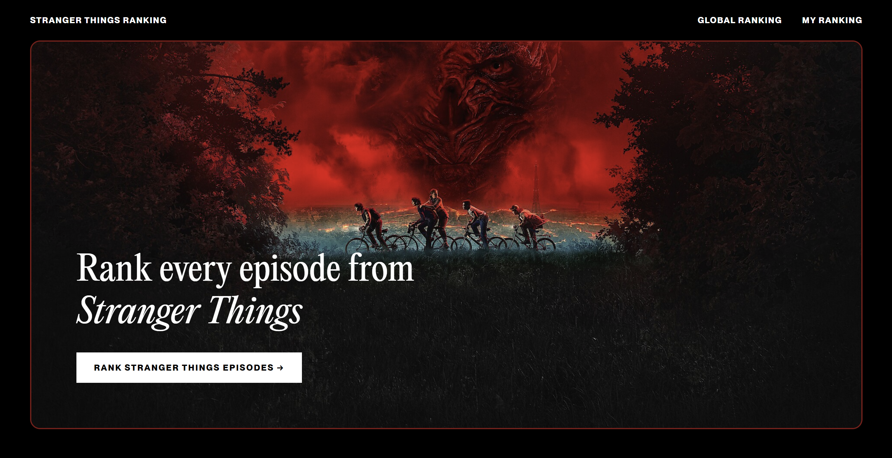

Stranger Things Ranker
An interactive website that lets users rank every Stranger Things episode using a custom sorting algorithm.
Overview
Stranger Things Ranker is a web app where users rank every episode through simple head-to-head matchups. Behind the scenes, it uses an insertion sort–style algorithm: each episode is compared and then inserted into its correct position within a growing ranked list based on the user’s choices. Built with HTML, CSS, and JavaScript, the project combines dynamic DOM rendering with a cinematic, design-focused interface to create a fully personalized ranking experience.
Achievements
- Designed and implemented a comparison-based ranking system using an insertion sort–style algorithm to dynamically build a fully ordered episode list.
- Developed interactive head-to-head voting logic in JavaScript, enabling real-time DOM updates without page reloads.
- Engineered a scalable episode data structure (JSON-based) supporting multiple seasons and future expansions.
- Built a responsive, cinematic UI inspired by the show’s aesthetic using custom typography and adaptive layouts.
- Implemented local state handling to preserve rankings and generate structured results tables.
Project Details
Technologies
HTML
CSS
JavaScript
Responsive Design
Concepts
Insertion Sort–based algorithm
DOM manipulation
Event handling
Local state management